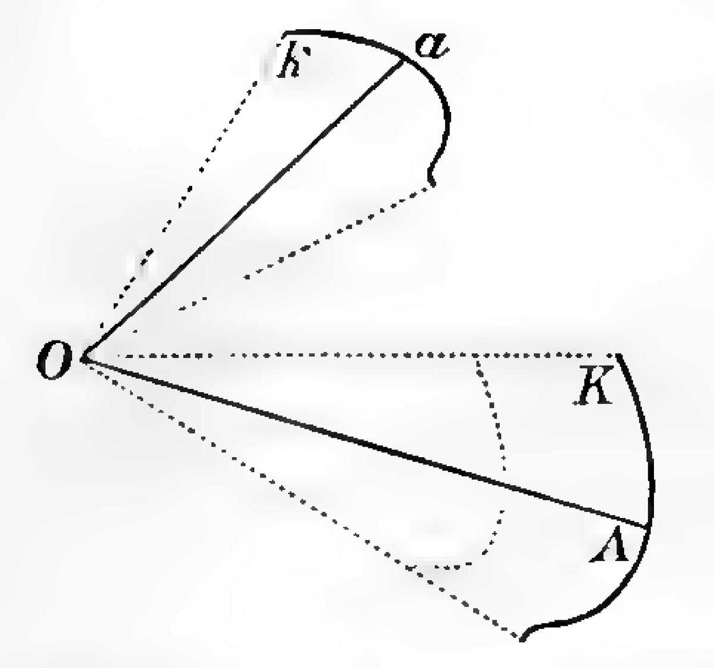
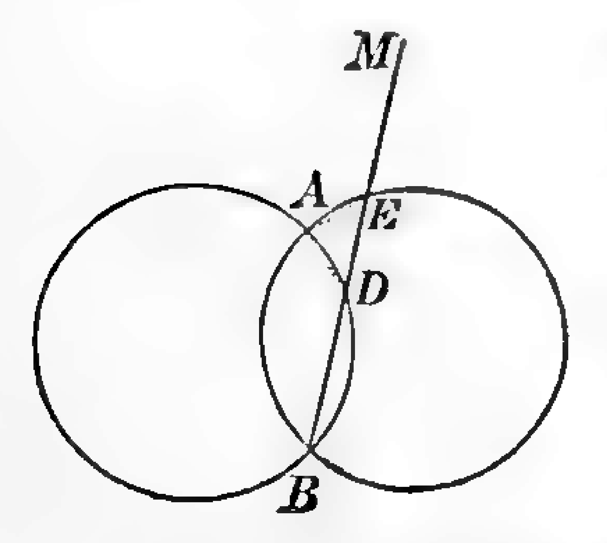

Chapter III — The Theory of Revolution¶
Julius Petersen — Methods and Theories (Authorized Translation by Sophus Haagensen, 1879 · pp. 70–94)
Chapter III — The Theory of Revolution (pp. 70–94, §§ 1–5 & Problems 349–402)¶
[p. 65] 1. From a given point \(O\), let straight lines be drawn to all points \(a\) of a given curve \(k\); revolve every such ray around \(O\) through a given constant angle \(v\), increasing (or diminishing) its length simultaneously in a given constant ratio \(f\), so that the extremity \(A\) satisfies


The locus of \(A\) is a new curve \(K\) directly similar to \(k\) (obtained by composing pure rotation through \(v\) around \(O\) with homothetic multiplication by \(f\) around \(O\)). Petersen names (p. 65):
\(O\) — the pivot point,
\(v\) — the angle of revolution, and
\(f\) — the ratio of revolution (Theory of Revolution).
For every pair of similarly situated points \(a \in k\) and \(A \in K\), the triangle \(\triangle aOA\) preserves a constant shape; thus \(K\) is generated by one vertex \(A\) of a triangle of invariant form rotating and scaling around its fixed vertex \(O\) while the third vertex \(a\) traces \(k\)!
f. 0090 · p. 74[p. 66] 3. When \((O, v, f)\) are given, any system of straight lines and circles can be revolved by straight edge and compasses: a straight line is revolved by revolving its foot from \(O\) (turning the line by angle \(v\)), and a circle is revolved by revolving its centre and radius.
- 4. Fundamental Triangle-Placement Theorem (p. 66):
To place a triangle, similar to a given triangle, with one vertex at a given point O and the two other vertices lying on two given curves \(k_1\) and \(k_2\).
Make \(O\) the pivot point, take the angle of the triangle at \(O\) for \(v\), and take the ratio of the two sides enclosing angle \(O\) for \(f\). Revolve \(k_1\) by \((O, v, f)\) into \(K_1\); each intersection of \(K_1\) with \(k_2\) furnishes the second vertex, and revolving back gives the vertex on \(k_1\)!
Figure 5.1 — Petersen’s Problem 349 (p. 67): Equilateral Triangle Across Three Parallel Lines. Choosing P on PA1 (\(L_1: y = 0\)) as pivot point with \(v = 60^\circ, f = 1\), revolving middle parallel B1B2 (\(L_2: y = 1\)) by \(+60^\circ\) yields locus line B1pB2p, which meets upper parallel C1C2 (\(L_3: y = 3\)) at R \(= (\sqrt{3}/3, 3)\). Revolving back via equilateral arcs PR and RP places Q \(= (5\sqrt{3}/3, 1)\) on L2, forming equilateral PQR of exact quadrance \(28/3\).
f. 0095 · p. 79Canonical Rotation & Spiral-Similarity Problems (pp. 67–68)¶
Problem 349 (p. 67): To place an equilateral triangle with its vertices in three parallel lines. Solution: Take any point P in one of the parallels as one vertex; this point will be the pivot point; \(v = 60^\circ, f = 1\).
Problem 350 (p. 67): To place an equilateral triangle with its vertices in three concentric circles. Take any point on one circle as pivot point with \(v = 60^\circ, f = 1\) (revolving the second circle by \(60^\circ\) around that point until it meets the third circle!).
Problem 352 (p. 67): In a given triangle to inscribe another triangle similar to a given one and having one vertex at a given point P on one side. Pivot at \(P\) with \((v, f)\) taken from the prototype triangle!
§ 5 — Existence & Construction of the Pivot Point (p. 68): Any two directly similar figures in the plane admit a unique pivot point \(O\) (unless congruent and parallel-translated): if corresponding lines \(AB\) and \(ab\) meet at \(P\), then \(O\) is the second intersection of circles \(PAa\) and \(PBb\) (Miquel’s pivot theorem).
Special Revolutions & Tangent-Angle Configurations (Problems 363–386, pp. 83–90): Revolving lines and circles through prescribed rotation angles reduces inscribed-angle, equidistant-chord, and perimeter-ratio problems on two intersecting curves directly to auxiliary rotated loci.
Problem 387 (p. 91): Through one intersection point B of two given intersecting circles to draw a secant MB cutting the circles again in D and E so that the chords or tangent powers satisfy a prescribed ratio, analyzed by revolving one circle around \(A\) onto the other.

